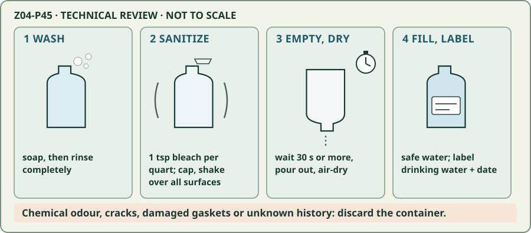

Z04-P45 · Water · New manuscript
Clean and sanitize reusable food-grade water storage containers
Prepare safe food-grade containers before filling them with emergency or backcountry drinking water.
When it applies · Reusable food-grade plastic or metal water jugs, bottles and bladders prior to filling with potable water.
Equipment · Dishwashing soap, warm potable water, plain unscented 5%–9% liquid household bleach, measuring teaspoon and clean drain rack.

Actions
- Inspect the container first—use only intact food-grade vessels with tight-fitting lids, never containers that ever held toxic chemicals, cleaners or fuel.[W06, W35]
- Wash the interior, cap and threads thoroughly with dish soap and warm water, then rinse completely with safe water.[W35]
- Sanitize with 1 teaspoon unscented 5%–9% bleach in 1 quart of water: cap, shake so it touches all inside surfaces, wait at least 30 seconds, pour it out and let the container air-dry before filling.[W35]
Failure recognition · Filling unwashed recycled milk jugs, cracked bottles or former chemical containers with emergency drinking water.[W06, W35]
Verify · Confirm the container is food-grade, odor-free, air-dried after sanitizing, filled with safe water, capped and labelled drinking water with the date.[W35, W06, ED]
Stop or change course · Discard containers with persistent chemical odor, cracked plastic, damaged gaskets or unknown industrial history; washing cannot make them safe.[W06, W35]
Evidence and editorial notes
- W06 · CDC · How to Create an Emergency Water Supply (current web edition)
- Section: How to store emergency water; Safe storage containers · Conditions: Potable water intended for emergency storage
Support: Prefer sealed commercial water or clean food-grade tight-closing containers. Avoid containers that held toxic chemicals.
Limitations: Container shelf durability and rotation depend on plastic/material type and storage heat. · Conflicting evidence: None; reinforces strict raw-vs-clean segregation.
Editorial note: Used to enforce labeling and dedicated raw/potable vessel separation. · Specialist reviewer: Drinking-water safety and public health
Primary source · checked 2026-11-24 - W35 · CDC · How to Create an Emergency Water Supply (current web edition)
- Section: Cleaning and sanitizing a water storage container; labelling and storage · Conditions: Reusable container before filling with emergency drinking water
Support: Wash the container with soap and rinse completely with water. Make a sanitizing solution of 1 teaspoon unscented 5% to 9% bleach in 1 quart of water, cap and shake so it touches all inside surfaces, wait at least 30 seconds, pour it out and let the empty container air-dry before use. Label it drinking water with the storage date and replace the water every six months. Never use containers that held toxic chemicals.
Limitations: Page dated 2025-06-27. No rinse step follows sanitizing. · Conflicting evidence: Corrects W13, which adds a post-sanitizing rinse (W2C-E045).
Editorial note: Added in W2C-B07. · Specialist reviewer: Drinking-water utility and public health
Primary source · checked 2026-11-24
Current assessment · W2C-E044-W35 (2026-11-28) · Bounded primary support recorded: Ground the W2C-B07 water-treatment plates. Limits: Product labels govern tablets, filters and UV devices.
Source lineage · CDC container sanitization guidance; new manuscript · Classification · New manuscript.